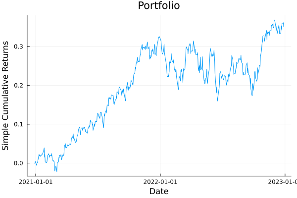
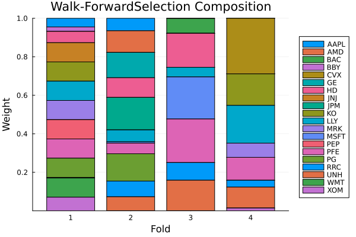

The source files can be found in examples/.
Time-dependent optimisers
The previous example varied inputs of one optimiser over the folds of a cross-validation scheme. This one varies the optimiser itself: a TimeDependent whose per-fold values are whole optimisers is a schedule of optimisers, and it works in two positions:
- As the optimiser — handed straight to
cross_val_predict; foldiruns entryi. - In an optimiser-valued field — a fallback (
fb), a meta-optimiser's inner/outer optimisers, or aPipeline's optimisation step.
The admissibility rule is the same one that governs every other field: an input may be time-dependent iff it is problem definition (what is being solved — and which strategy solves it is problem definition), never execution control (solvers, random number generators, a meta's own cross-validation scheme). The one wrinkle optimiser positions add is that they are required: there is no static default to fall back to outside fold loops, so a schedule there must state its fold-less value explicitly via default, or fold-less use throws.
Our running subject is a regime-switching backtest: a defensive strategy in turbulent markets, an aggressive one in calm markets, switched per rebalance.
using PortfolioOptimisers, PrettyTables# Format for pretty tables.resfmt = (v, i, j) -> begin if j == 1 return v else return isa(v, Number) ? "$(round(v*100, digits=2)) %" : v endend;1. Setting up
Three years of daily data, and two MeanRisk strategies that are easy to tell apart: the defensive one minimises variance under a 10 % position cap, the aggressive one maximises the return–risk ratio uncapped. A walk-forward with a one-year training window rebalancing every half-year gives us the fold loop.
using CSV, TimeSeries, DataFrames, Clarabel, Statistics, StableRNGsX = TimeArray(CSV.File(joinpath(@__DIR__, "..", "SP500.csv.gz")); timestamp = :Date)[(end - 252 * 3):end]rd = prices_to_returns(X)slv = [Solver(; name = :clarabel1, solver = Clarabel.Optimizer, settings = Dict("verbose" => false), check_sol = (; allow_local = true, allow_almost = true)), Solver(; name = :clarabel2, solver = Clarabel.Optimizer, settings = Dict("verbose" => false, "max_step_fraction" => 0.9), check_sol = (; allow_local = true, allow_almost = true))];defensive = MeanRisk(; obj = MinimumRisk(), opt = JuMPOptimiser(; slv = slv, wb = WeightBounds(; lb = 0.0, ub = 0.1)))aggressive = MeanRisk(; obj = MaximumRatio(), opt = JuMPOptimiser(; slv = slv))wf = IndexWalkForward(252, 126)n = n_splits(wf, rd)4To read off which strategy a fold ran, we backtest both static strategies once and match weights — a fold of the schedule that solves the same problem on the same window produces the same weights.
pred_def = cross_val_predict(defensive, rd, wf)pred_agg = cross_val_predict(aggressive, rd, wf)function which_strategy(pred, i) w = pred.pred[i].res.w return if isapprox(w, pred_def.pred[i].res.w; rtol = 1e-6) "defensive" elseif isapprox(w, pred_agg.pred[i].res.w; rtol = 1e-6) "aggressive" else "other" endend;2. A schedule of optimisers as the optimiser
The simplest spelling is a per-fold vector of optimisers handed to cross_val_predict directly — the schedule is the optimiser argument. Here the strategy alternates by calendar: entry i is the complete optimiser for fold i, exactly as a constraint schedule's entry i was the complete field value.
calendar = TimeDependent([isodd(i) ? defensive : aggressive for i in 1:n])pred_cal = cross_val_predict(calendar, rd, wf)pretty_table(DataFrame(:fold => 1:n, :ran => [which_strategy(pred_cal, i) for i in 1:n], :max_weight => [maximum(p.res.w) for p in pred_cal.pred]); formatters = [resfmt])┌───────┬────────────┬────────────┐
│ fold │ ran │ max_weight │
│ Int64 │ String │ Float64 │
├───────┼────────────┼────────────┤
│ 1 │ defensive │ 10.0 % │
│ 2 │ aggressive │ 16.9 % │
│ 3 │ defensive │ 10.0 % │
│ 4 │ aggressive │ 28.87 % │
└───────┴────────────┴────────────┘Odd folds are position-capped minimum-variance solutions, even folds concentrate freely — each fold ran its own strategy, and everything downstream of the fold loop (previous-weights threading, prediction stitching, plotting) is oblivious to the switch.
Like any schedule, it is sized to the consuming loop's folds and validated at split time:
try cross_val_predict(TimeDependent([defensive, aggressive]), rd, wf)catch err errendDimensionMismatch("a TimeDependent schedule of optimisers has 2 entries, which must equal the number of folds (4)")3. Fold-less solves: default or throw
A constraint schedule is inert outside fold loops because the field it sits in has a static default to reset to. An optimiser position has none — "no optimiser" is not a thing optimise can run — so a fold-less solve of a defaultless schedule fails, with a structured error pointing at cross_val_predict:
try optimise(calendar, rd)catch err errendTimeDependentDefaultError{String}("a TimeDependent schedule stands in for the optimiser itself but supplies no `default`, so there is no optimiser to run outside a fold loop. A schedule is defined only over the folds of a cross-validation scheme; this solve has none. Give the schedule a fold-less optimiser: TimeDependent(val; default = opt).")The schedule states its fold-less value with the default keyword. This is deliberately explicit — entry 1 is a statement about fold 1, not about fold-less use, so the library never silently promotes it:
calendar_d = TimeDependent([isodd(i) ? defensive : aggressive for i in 1:n]; default = defensive)res_foldless = optimise(calendar_d, rd)isapprox(res_foldless.w, optimise(defensive, rd).w)trueThe default never runs inside a fold loop, so it is not counted by the fold-count assertion — only val's entries are.
4. Regime switching with callables
A calendar fixed in advance is rarely the point. A callable schedule derives the fold's optimiser from the fold's own data: this one compares the training window's annualised equal-weight volatility against the full sample's and goes defensive in the turbulent half.
function ew_vol(Xm) return std(Xm * fill(1 / size(Xm, 2), size(Xm, 2))) * sqrt(252)endfunction regime(ctx) vol_train = ew_vol(ctx.rd.X[ctx.train_idx[ctx.i], :]) return vol_train > ew_vol(ctx.rd.X) ? defensive : aggressiveendpred_regime = cross_val_predict(TimeDependent(regime; default = defensive), rd, wf)pretty_table(DataFrame(:fold => 1:n, :ran => [which_strategy(pred_regime, i) for i in 1:n]); formatters = [resfmt])┌───────┬────────────┐
│ fold │ ran │
│ Int64 │ String │
├───────┼────────────┤
│ 1 │ defensive │
│ 2 │ aggressive │
│ 3 │ aggressive │
│ 4 │ aggressive │
└───────┴────────────┘Because a bare function's output type is unknowable upfront, it is checked when the fold loop swaps the value in — a callable that returns something that is not an optimiser fails there, with the fold that exposed it:
try cross_val_predict(TimeDependent(ctx -> Fees(; l = 0.001); default = defensive), rd, wf)catch err errendArgumentError("a TimeDependent schedule in an optimiser position resolved to a Fees{Nothing, Float64, Nothing, Nothing, Nothing, @NamedTuple{atol::Float64}}, which is neither an optimisation estimator nor a precomputed optimisation result. A callable schedule standing in for an optimiser must return an OptE_Opt for every fold.")A struct subtyping TimeDependentOptimiserCallable declares its output kind in the type, so a schedule holding one is statically admissible wherever the optimiser-typed bounds require it (the meta-optimisers' fields below), its parameters are inspectable data, and — being a type — it can declare previous-weights needs via needs_previous_weights. Here is the same policy as a reusable type:
struct RegimeSwitch{T <: PortfolioOptimisers.OptimisationEstimator, U <: PortfolioOptimisers.OptimisationEstimator} <: PortfolioOptimisers.TimeDependentOptimiserCallable calm::T turbulent::Uendfunction (r::RegimeSwitch)(ctx::TimeDependentContext) vol_train = ew_vol(ctx.rd.X[ctx.train_idx[ctx.i], :]) return vol_train > ew_vol(ctx.rd.X) ? r.turbulent : r.calmendpred_struct = cross_val_predict(TimeDependent(RegimeSwitch(aggressive, defensive); default = defensive), rd, wf)all(isapprox(a.res.w, b.res.w) for (a, b) in zip(pred_struct.pred, pred_regime.pred))trueHow do the three backtests compare out of sample? The switcher sits where it should — its realised risk between the two static strategies:
rk = LowOrderMoment(; alg = SecondMoment())pretty_table(DataFrame(:strategy => ["defensive", "aggressive", "regime switch"], :oos_risk => [expected_risk(rk, pred_def), expected_risk(rk, pred_agg), expected_risk(rk, pred_regime)]); formatters = [resfmt])┌───────────────┬──────────┐
│ strategy │ oos_risk │
│ String │ Float64 │
├───────────────┼──────────┤
│ defensive │ 0.01 % │
│ aggressive │ 0.02 % │
│ regime switch │ 0.01 % │
└───────────────┴──────────┘using StatsPlots, GraphRecipesplot_portfolio_cumulative_returns(pred_regime)
The composition plot makes the switching visible — capped, spread-out folds alternate with concentrated ones:
plot_composition(pred_regime)
5. Mixed schedules: estimators and precomputed results side by side
An entry need not be an estimator. A precomputed OptimisationResult is a legal entry: its fold is predict-only — the stored weights are replayed on the fold's test window, not re-optimised. This splices an externally solved period (a frozen model, a committee-approved allocation) into an otherwise live backtest:
frozen = optimise(defensive, rd)mixed = TimeDependent([i == 1 ? frozen : aggressive for i in 1:n]; default = defensive)pred_mixed = cross_val_predict(mixed, rd, wf)isapprox(pred_mixed.pred[1].res.w, frozen.w)trueFold 1 carries the frozen weights verbatim; the remaining folds re-optimise per window.
The one scheme mixed schedules cannot serve is asset-subsampling cross-validation (MultipleRandomised): each path views the problem down to a random asset subset, and a solved result has no sub-portfolio semantics — there is no meaningful "view" of a fixed weight vector onto fewer assets — so result entries are rejected up front:
mrand = MultipleRandomised(IndexWalkForward(252, 126); subset_size = 15, n_subsets = 2, rng = StableRNG(987654321), seed = 42)try cross_val_predict(mixed, rd, mrand)catch err errendArgumentError("a precomputed optimisation result cannot be viewed to an asset subset: its weights were solved over the full universe and a sub-portfolio of them has no defined meaning. A TimeDependent schedule holding precomputed results is therefore incompatible with asset-subsampling cross-validation (e.g. MultipleRandomised); use estimator entries there instead.")(A schedule of estimators works under MultipleRandomised exactly like any other optimiser — estimator entries are viewed down to each path's subset like a static optimiser would be.)
6. Post-swap recursion: entries with schedules of their own
The estimator a schedule swaps in may itself carry schedules in its fields. Those resolve against the same fold context immediately after the swap — one fold, one context, however deep the estimator goes. Here every fold runs the aggressive strategy, but the swapped-in copy carries a de-leveraging cap schedule of its own, sized to the same fold loop:
agg_capped = MeanRisk(; obj = MaximumRatio(), opt = JuMPOptimiser(; slv = slv, wb = TimeDependent([WeightBounds(; lb = 0.0, ub = 0.35 - 0.15 * (i - 1) / max(n - 1, 1)) for i in 1:n])))pred_rec = cross_val_predict(TimeDependent(fill(agg_capped, n); default = defensive), rd, wf)pretty_table(DataFrame(:fold => 1:n, :max_weight => [maximum(p.res.w) for p in pred_rec.pred], :cap => [0.35 - 0.15 * (i - 1) / max(n - 1, 1) for i in 1:n]); formatters = [resfmt])┌───────┬────────────┬─────────┐
│ fold │ max_weight │ cap │
│ Int64 │ Float64 │ Float64 │
├───────┼────────────┼─────────┤
│ 1 │ 35.0 % │ 35.0 % │
│ 2 │ 16.9 % │ 30.0 % │
│ 3 │ 22.62 % │ 25.0 % │
│ 4 │ 20.0 % │ 20.0 % │
└───────┴────────────┴─────────┘What is rejected is nesting — TimeDependent(TimeDependent(...)), or a schedule as a vector entry — because entry i is fold i's complete value, so a schedule inside a schedule has no fold left to vary over:
try TimeDependent([defensive, TimeDependent([aggressive, defensive])])catch err errendArgumentError("no entry of val may be a TimeDependent: entry i is fold i's complete field value, so schedules do not nest. To vary parts of a vector-valued field, assemble the fold's vector in a callable: TimeDependent(ctx -> [dynamic(ctx), static]).")7. Schedules in optimiser-valued fields
7.1 A per-fold fallback
Every concrete optimiser's fallback fb takes a schedule, and — because optional optimiser positions admit nothing entries — the fallback can switch off per fold. Here the primary's cap schedule turns infeasible in the second half of the backtest (a 4 % cap over 20 assets cannot sum to 1), and the fallback schedule provides an equal-weight rescue exactly there:
primary_caps = TimeDependent([WeightBounds(; lb = 0.0, ub = i <= n ÷ 2 ? 0.35 : 0.04) for i in 1:n])fb_sched = TimeDependent([i <= n ÷ 2 ? nothing : EqualWeighted() for i in 1:n])mr_fb = MeanRisk(; obj = MinimumRisk(), opt = JuMPOptimiser(; slv = slv, wb = primary_caps), fb = fb_sched)pred_fb = cross_val_predict(mr_fb, rd, wf)pretty_table(DataFrame(:fold => 1:n, :equal_weighted => [all(w -> isapprox(w, 1 / length(p.res.w); rtol = 1e-6), p.res.w) for p in pred_fb.pred]); formatters = [resfmt])┌ Warning: Failed to solve optimisation problem.
│ Check `result.retcode.res` on the returned result for per-solver diagnostics.
└ @ PortfolioOptimisers ~/work/PortfolioOptimisers.jl/PortfolioOptimisers.jl/src/20_Optimisation/08_Base_JuMPOptimisation.jl:1789
┌ Warning: Using fallback method. Please ignore previous optimisation failure warnings.
└ @ PortfolioOptimisers ~/work/PortfolioOptimisers.jl/PortfolioOptimisers.jl/src/20_Optimisation/01_Base_Optimisation.jl:2722
┌ Warning: Failed to solve optimisation problem.
│ Check `result.retcode.res` on the returned result for per-solver diagnostics.
└ @ PortfolioOptimisers ~/work/PortfolioOptimisers.jl/PortfolioOptimisers.jl/src/20_Optimisation/08_Base_JuMPOptimisation.jl:1789
┌ Warning: Using fallback method. Please ignore previous optimisation failure warnings.
└ @ PortfolioOptimisers ~/work/PortfolioOptimisers.jl/PortfolioOptimisers.jl/src/20_Optimisation/01_Base_Optimisation.jl:2722
┌───────┬────────────────┐
│ fold │ equal_weighted │
│ Int64 │ Bool │
├───────┼────────────────┤
│ 1 │ 0.0 % │
│ 2 │ 0.0 % │
│ 3 │ 100.0 % │
│ 4 │ 100.0 % │
└───────┴────────────────┘A fb schedule without a default does not throw on a fold-less solve — nothing is a legal fallback value, so outside fold loops it simply means no fallback. This is the one optimiser-valued position with that escape, precisely because absence is representable there.
7.2 Meta-optimisers: field-level, element-level, and bind
The meta-optimisers' optimiser fields take schedules too, with one extra rule inherited from the previous example's §7: bind = :nearest is legal on an optimiser position iff an inner fold loop actually consumes the value there.
NestedClustered hands its whole opti field across its inner cross-validation (it calls it once per cluster), so a field-level :nearest schedule is consumed by the inner folds — sized to them, not to any outer backtest. Because opti also has a fold-less consumer (the per-cluster full-window solve), a :nearest schedule there must carry a default, and the meta must actually have a cv — both checked at construction.
One practical note: the schedule's entries run per cluster, over that cluster's few assets — our defensive strategy's 10 % position cap is infeasible on a cluster of fewer than ten assets, so inside NestedClustered we use the UniformValues algorithm to cap the weights dynamically to the cluster's size. We can do the same for the outer estimator, but we must first know how many clusters there will be, this means we have to run clusterise before the run. Alternatively, we can provide a dummy asset set to the outer optimiser, and let it be populated with the correct names and size of the synthetic assets. They are named _i for i = 1, …, k where k is the number of clusters, and the outer optimiser's WeightBoundsEstimator will use the UniformValues algorithm to cap the weights dynamically to the number of clusters.
inner_sets = UniverseSets(; dict = Dict("nx" => rd.nx))inner_minvar = MeanRisk(; obj = MinimumRisk(), opt = JuMPOptimiser(; slv = slv, sets = inner_sets, wb = WeightBoundsEstimator(; lb = 0, ub = UniformValues())))outer_sets = UniverseSets(; dict = Dict("nx" => ["placeholder"]))outer_minvar = MeanRisk(; obj = MinimumRisk(), opt = JuMPOptimiser(; slv = slv, sets = outer_sets, wb = WeightBoundsEstimator(; lb = 0, ub = UniformValues())))inner_cv = OptimisationCrossValidation(; cv = KFold(; n = 3))nco = NestedClustered(; opti = TimeDependent([inner_minvar, aggressive, inner_minvar], :nearest; default = inner_minvar), opto = outer_minvar, cv = inner_cv)res_nco = optimise(nco, rd)maximum(res_nco.w)0.06666666666589142The inner KFold(3) consumed the three-entry schedule (fold i of the inner loop ran entry i) while each cluster's full-window solve ran the default — one schedule, both inner legs served.
Stacking enters its inner cross-validation once per candidate, so there the schedule goes on an element of opti, not the field (a field-level schedule would change the number of candidates per fold, and the outer optimiser's inputs would stop lining up). For this optimiser, we always know how many inner folds there will be so it is the user's responsibility to provide the correct number of entries in the UniverseSets instance, here we use two inner optimisers, so the synthetic asset names are _1 and _2.
outer_sets = UniverseSets(; dict = Dict("nx" => ["_1", "_2"]))outer_minvar = MeanRisk(; obj = MinimumRisk(), opt = JuMPOptimiser(; slv = slv, sets = outer_sets, wb = WeightBoundsEstimator(; lb = 0, ub = UniformValues())))st = Stacking(; opti = [TimeDependent([inner_minvar, aggressive, inner_minvar], :nearest; default = inner_minvar), aggressive], opto = outer_minvar, cv = inner_cv)res_st = optimise(st, rd)maximum(res_st.w)0.343694671942746Everywhere no inner fold loop owns the position — every fb, every opto, SubsetResampling's opt (its internal loop draws asset subsets, not time folds) — a :nearest optimiser schedule is meaningless and rejected at construction:
try MeanRisk(; opt = JuMPOptimiser(; slv = slv), fb = TimeDependent([EqualWeighted(), InverseVolatility()], :nearest; default = EqualWeighted()))catch err errendArgumentError("field `fb` of MeanRisk holds a `bind = :nearest` TimeDependent schedule, but no inner fold loop of MeanRisk consumes `fb`, so there is no nearest fold loop for it to bind to. Use `bind = :outermost`: the fold loop that reaches the MeanRisk resolves the schedule.")(Field-level schedules on Stacking.opti and every other optimiser position remain available with the default bind = :outermost, consumed by whatever fold loop reaches the meta.)
8. Pipelines: a schedule as the optimisation step
A whole workflow switches strategies the same way. The statically-typed schedule forms — a vector of optimisers/results, a declared TimeDependentOptimiserCallable — classify directly as a Pipeline's optimisation step, and cross_val_predict(pipe, data, cv) resolves the step per fold before the pipeline is fitted, so preprocessing and prior steps never learn the strategy changed. Pipeline fold loops split the raw input — here a PricesResult of prices, not returns — so the schedule is sized against it:
pr = PricesResult(; X = X)n_pipe = n_splits(wf, pr)pipe = Pipeline(; steps = (PricesToReturns(), EmpiricalPrior(), TimeDependent([isodd(i) ? defensive : aggressive for i in 1:n_pipe]; default = defensive)))pred_pipe = cross_val_predict(pipe, pr, wf)pretty_table(DataFrame(:fold => 1:n_pipe, :max_weight => [maximum(p.res.w) for p in pred_pipe.pred]); formatters = [resfmt])┌───────┬────────────┐
│ fold │ max_weight │
│ Int64 │ Float64 │
├───────┼────────────┤
│ 1 │ 10.0 % │
│ 2 │ 16.38 % │
│ 3 │ 10.0 % │
│ 4 │ 26.13 % │
└───────┴────────────┘A fold-less fit(pipe, X) resolves the step to its default, exactly like §3's fold-less optimise.
9. Recovering which entry produced a fold
Sections 2–8 read a fold's strategy back with which_strategy, matching its weights against the two static backtests. That works for any schedule, callables included, but it is indirect — and for a vector schedule it is unnecessary. A vector schedule is keyed by the fold index and nothing else: entry i runs at fold i of the scheme's split enumeration, so val[i] is fold i's optimiser. No stored provenance, no weight matching — calendar.val[i] already answers "which strategy ran on fold i", and it agrees with the weight-matched column by construction:
DataFrame(:fold => 1:n, :from_schedule => [calendar.val[i] === defensive ? "defensive" : "aggressive" for i in 1:n], :from_weights => [which_strategy(pred_cal, i) for i in 1:n])| Row | fold | from_schedule | from_weights |
|---|---|---|---|
| Int64 | String | String | |
| 1 | 1 | defensive | defensive |
| 2 | 2 | aggressive | aggressive |
| 3 | 3 | defensive | defensive |
| 4 | 4 | aggressive | aggressive |
Under the time-ordered schemes (walk-forward, unshuffled KFold, pipelines) fold i is also pred.pred[i], so the index lines up from schedule to prediction end to end.
The schemes that regroup for reporting break that last alignment but not the recovery. CombinatorialCrossValidation recombines each split's test groups into paths, so a path's predictions no longer sit in split order — yet the schedule is still keyed by the split index, and split(cv, rd) hands back the split→path map. So you can say which entry fed each path without inspecting a single prediction — the same indices you keyed the schedule by:
ccv = CombinatorialCrossValidation(; n_folds = 6, n_test_folds = 2)n_c = n_splits(ccv)sched_c = TimeDependent([isodd(j) ? defensive : aggressive for j in 1:n_c]; default = defensive)paths = split(ccv, rd).path_ids # paths[group, split] = the path each test group lands inDataFrame(:split => 1:n_c, :entry => [sched_c.val[j] === defensive ? "defensive" : "aggressive" for j in 1:n_c], :feeds_paths => [sort(paths[:, j]) for j in 1:n_c])| Row | split | entry | feeds_paths |
|---|---|---|---|
| Int64 | String | Array… | |
| 1 | 1 | defensive | [1, 1] |
| 2 | 2 | aggressive | [1, 2] |
| 3 | 3 | defensive | [1, 3] |
| 4 | 4 | aggressive | [1, 4] |
| 5 | 5 | defensive | [1, 5] |
| 6 | 6 | aggressive | [2, 2] |
| 7 | 7 | defensive | [2, 3] |
| 8 | 8 | aggressive | [2, 4] |
| 9 | 9 | defensive | [2, 5] |
| 10 | 10 | aggressive | [3, 3] |
| 11 | 11 | defensive | [3, 4] |
| 12 | 12 | aggressive | [3, 5] |
| 13 | 13 | defensive | [4, 4] |
| 14 | 14 | aggressive | [4, 5] |
| 15 | 15 | defensive | [5, 5] |
(MultipleRandomised is the same idea one level in — it keys the schedule by each path's own fold position, so re-running split recovers the per-path fold order.)
A callable has no entry to index, so none of this reaches it: what it returned on a fold is knowable only by re-running it, or by having it record its own choice. That last option is a logging concern you own, and a TimeDependentOptimiserCallable struct is the place for it — give the functor a field to write to, and it logs the regime as a side effect of picking it. Distinct folds write distinct slots, so it stays correct under the parallel fold loop:
struct RegimeSwitchLogged{T <: PortfolioOptimisers.OptimisationEstimator, U <: PortfolioOptimisers.OptimisationEstimator} <: PortfolioOptimisers.TimeDependentOptimiserCallable calm::T turbulent::U log::Vector{Symbol}endfunction (r::RegimeSwitchLogged)(ctx::TimeDependentContext) picked = if ew_vol(ctx.rd.X[ctx.train_idx[ctx.i], :]) > ew_vol(ctx.rd.X) :turbulent else :calm end r.log[ctx.i] = picked return picked === :turbulent ? r.turbulent : r.calmendlogbook = Vector{Symbol}(undef, n)pred_logged = cross_val_predict(TimeDependent(RegimeSwitchLogged(aggressive, defensive, logbook); default = defensive), rd, wf)pretty_table(DataFrame(:fold => 1:n, :regime => logbook, :ran => [which_strategy(pred_logged, i) for i in 1:n]); formatters = [resfmt])┌───────┬───────────┬────────────┐
│ fold │ regime │ ran │
│ Int64 │ Symbol │ String │
├───────┼───────────┼────────────┤
│ 1 │ turbulent │ defensive │
│ 2 │ calm │ aggressive │
│ 3 │ calm │ aggressive │
│ 4 │ calm │ aggressive │
└───────┴───────────┴────────────┘The regime column is the callable telling you what it saw, filled as the backtest ran rather than reconstructed after it; ran confirms :turbulent folds took the defensive strategy.
10. Summary
| Position | Spelling | :nearest? | Fold-less |
|---|---|---|---|
| The optimiser itself | cross_val_predict(TimeDependent([opt₁, …, optₙ]; default = d), rd, cv) | — (it is handed to the loop directly) | runs default, or throws TimeDependentDefaultError without one |
Fallback fb | MeanRisk(; fb = TimeDependent([…])), entries may be nothing | rejected | default if given, else no fallback |
NestedClustered.opti | field-level schedule | legal (inner CV consumes the field); needs default + cv | per-cluster leg runs default |
Stacking.opti | element-level schedule per candidate | legal per element; needs default + cv | full-sample leg runs default |
opto, SubsetResampling.opt, meta fb | field-level schedule | rejected (no inner fold loop owns them) | default or throw / no-fallback for fb |
| Pipeline optimisation step | schedule as a step | — | fit runs default or throws |
Whatever the position: entry i is fold i's complete optimiser (or precomputed result — mixed schedules predict on result folds, except under asset-subsampling schemes); callables derive the fold's optimiser from its TimeDependentContext, with TimeDependentOptimiserCallable declaring the output kind statically; a swapped-in estimator's own schedules resolve against the same fold context (recursion), while schedules inside schedules are rejected (nesting); and the fold-less value is always something you said explicitly — a default, a static field default, or a structured error.
This page was generated using Literate.jl.